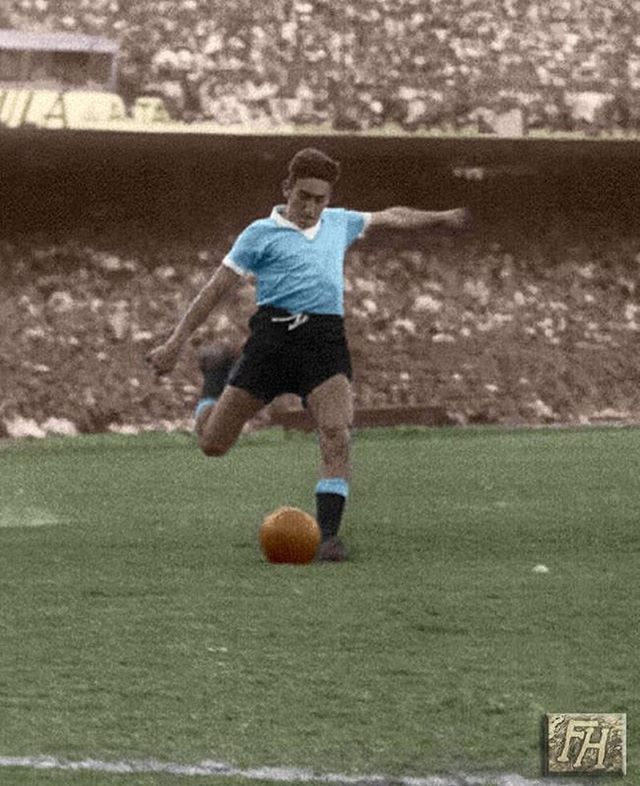
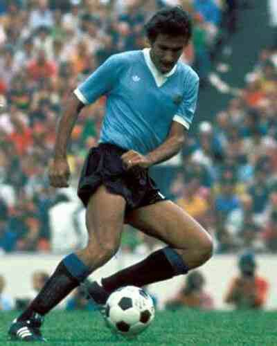
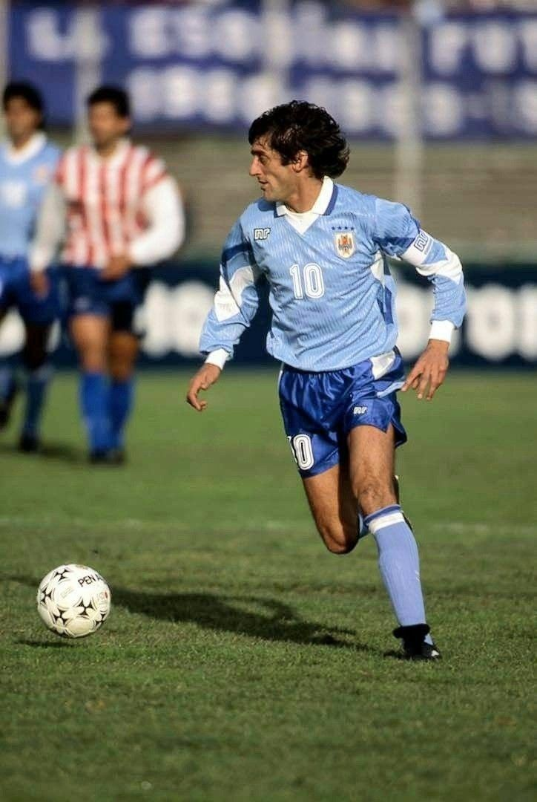
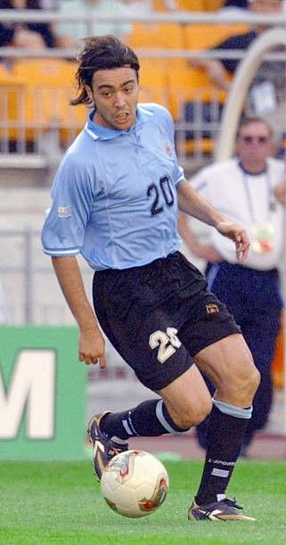
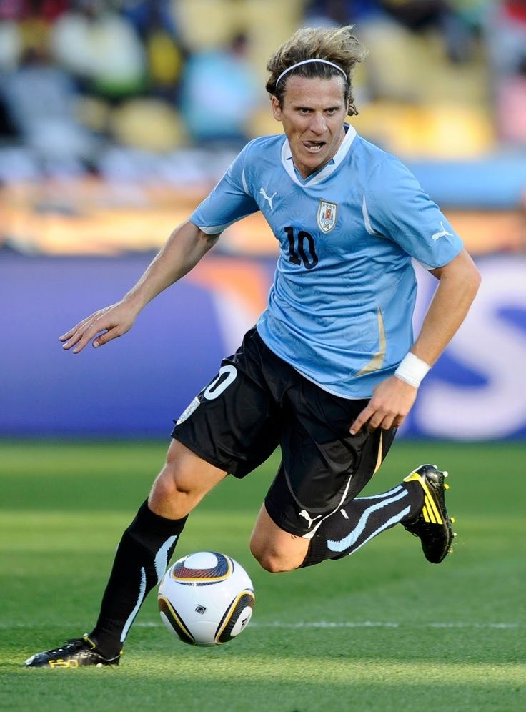
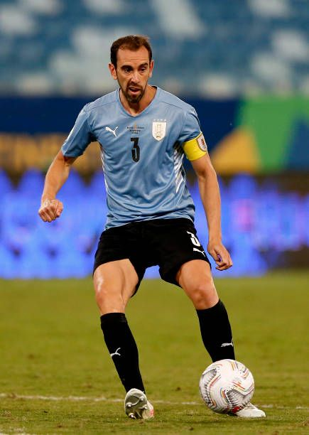
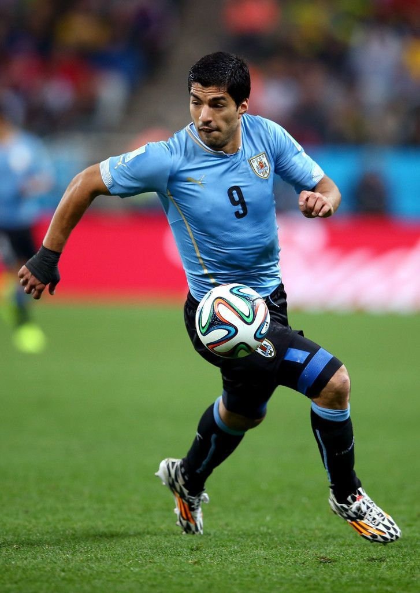
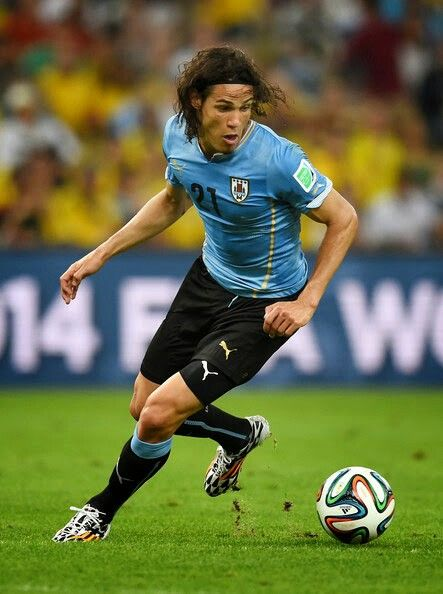

Alcides Ghiggia
1950 - 1952
Alcides Ghiggia foi o autor do gol que deu o título mundial ao Uruguai em 1950, no famoso "Maracanaço". Marcou o gol decisivo na final contra o Brasil, conquistando o segundo título mundial uruguaio. É um dos maiores heróis da história do futebol uruguaio.

Pedro Rocha
1961 - 1974
Pedro Rocha foi um dos melhores meio-campistas da história do futebol uruguaio. Participou de três Copas do Mundo (1962, 1966 e 1970) e foi fundamental no meio-campo uruguaio durante os anos 1960 e 1970. Com sua técnica e visão de jogo, foi um dos pilares da equipe uruguaia.

Ladislao Mazurkiewicz
1965 - 1974
Ladislao Mazurkiewicz foi um dos melhores goleiros da história do futebol uruguaio. Participou de duas Copas do Mundo (1966 e 1970) e foi eleito o melhor goleiro da Copa de 1970. Com seus reflexos e capacidade de decisão, foi fundamental na defesa uruguaia.

Enzo Francescoli
1982 - 1997
Enzo Francescoli foi um dos maiores jogadores da história do futebol uruguaio. Participou de três Copas do Mundo (1986, 1990 e 1994) e foi fundamental no meio-campo uruguaio durante os anos 1980 e 1990. Com sua técnica e elegância, é considerado um dos melhores camisas 10 da história uruguaia.

Álvaro Recoba
1995 - 2007
Álvaro Recoba foi um dos melhores atacantes da história do futebol uruguaio. Participou de duas Copas do Mundo (2002 e 2006) e foi fundamental no ataque uruguaio durante os anos 2000. Famoso por seus chutes de falta e capacidade de criar jogadas, foi um dos pilares da equipe uruguaia.

Diego Forlán
2002 - 2014
Diego Forlán foi um dos maiores atacantes da história do futebol uruguaio. Foi eleito o melhor jogador da Copa do Mundo de 2010 e artilheiro do torneio. Participou de três Copas do Mundo e foi fundamental na conquista da Copa América de 2011. Marcou 36 gols em 112 jogos pela seleção.

Diego Godín
2005 - 2019
Diego Godín é o jogador com mais partidas pela seleção uruguaia (159 jogos). Participou de quatro Copas do Mundo e foi fundamental na conquista da Copa América de 2011. Com sua liderança, técnica e capacidade de marcar gols decisivos, é considerado um dos melhores zagueiros da história do futebol uruguaio.

Luis Suárez
2007 - Presente
Luis Suárez é o maior artilheiro da história da seleção uruguaia (68 gols). Participou de quatro Copas do Mundo e foi fundamental na conquista da Copa América de 2011. Com sua capacidade de finalização, técnica e determinação, é considerado um dos melhores atacantes da história do futebol uruguaio.

Edinson Cavani
2008 - Presente
Edinson Cavani é o segundo maior artilheiro da história da seleção uruguaia (58 gols). Participou de quatro Copas do Mundo e foi fundamental na conquista da Copa América de 2011. Com sua capacidade de finalização, movimentação e determinação, é um dos pilares da equipe uruguaia atual.